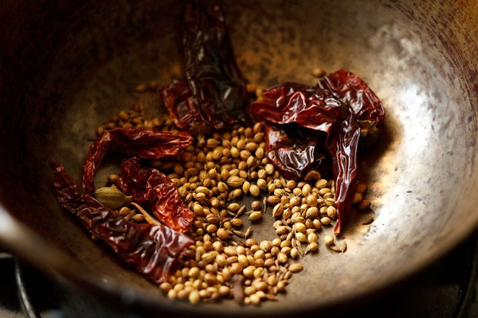
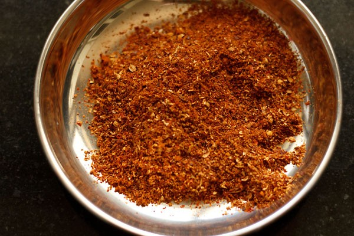
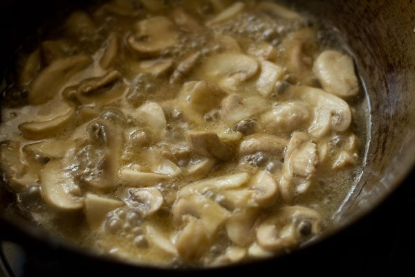
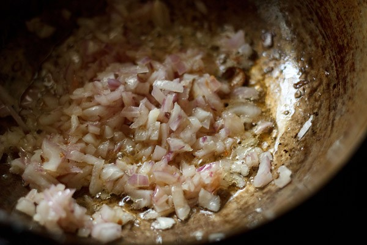
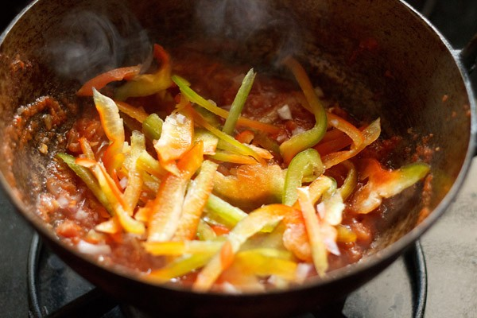
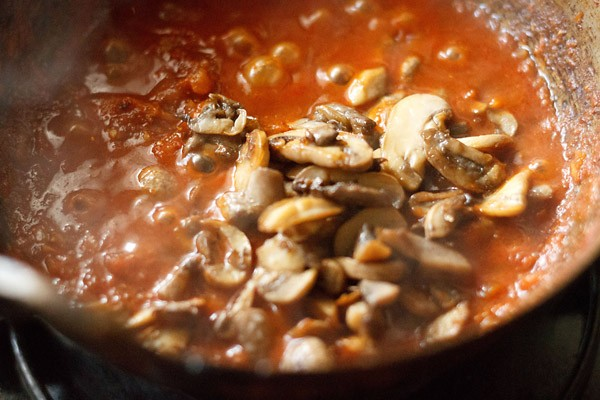

1. First dry roast all the spices for the kadai masala on low heat in a
kadai or pan until fragrant or lightly browned. Ensure you do not burn
them.
The spices are listed below:
1 tablespoon coriander seeds
½ teaspoon cumin seeds
3 to 4 dried red chilies – halved or broken & seeds removed
2 cloves
½ inch cinnamon
1 green cardamom
3 to 4 black peppercorns
1 single strand of mace (optional)

2. Once the spices cool down, add them to a mixer-grinder or a spice-grinder.
3. Grind to a semi fine powder. You can also grind to a fine powder.
4. Keep the ground kadai masala aside.

5. In the same jar, add 1 cup chopped tomatoes.
These are 2 medium to large tomatoes that will be pureed and yield about ¾
cup tomato puree.
Use tomatoes which are ripe, red and not too tangy.
6. Blend the tomatoes to a smooth and fine puree. Set the tomato puree
aside.
There is no need to add water while making the puree.

7. Slice 200 to 250 grams button mushrooms.
Before slicing, rinse the mushrooms very well in water scrubbing or
brushing off any dirt or mud on them. Trim the base stalks slightly and
discard the lower part of the stalk.
Slice 1 medium to large capsicum (bell pepper) thinly. Chop 1 medium onion
(about ½ cup finely chopped onion). Set the mushrooms and the veggies
aside.
8. Heat 3 tablespoons oil in a kadai/wok or pan. Keep heat to medium and add the sliced mushrooms.
9. Stir and sauté the sliced mushrooms on medium to medium-high heat. First, you will see the mushrooms releasing a lot of water.
10. After some minutes, the water evaporates. Sauté until the mushrooms get browned from the edges

11. Remove the sautéed mushrooms from the kadai and set aside.
12. In the same oil, add finely chopped onions.
13. Sauté the onions until they soften and turn translucent or a light golden.
14. Add 1 teaspoon ginger-garlic paste (1 inch ginger + 3 to 4 small to
medium-sized garlic, crushed in a mortar-pestle).
Mix and sauté for a few seconds or until the raw aroma of ginger-garlic
dissipates.

15. Add the tomato puree (about ¾ cup).
16. Stir to combine and continue to sauté.
17. Sauté the tomato puree until you see some oil separating at the sides.
18. When the tomato mixture looks glossy and you see some oil releasing
from the sides, add the thinly sliced capsicum/bell pepper (1 medium to
large capsicum).
You can even use green bell pepper or red or yellow bell pepper.

19. Mix and sauté for 5 to 6 minutes on a low heat.
20. Add the prepared kadai masala.
You can also add ¼ teaspoon turmeric powder at this step. Adding turmeric
powder is optional though.
21. Mix very well.
22. Next, add ½ cup water.
23. Season with salt.
24. Bring the gravy to a simmer on low heat till you see a few specks of oil floating on top.
25. Add the sautéed mushrooms (200 to 250 grams).
26. Mix again. If the consistency is too thick for your liking, you can add some more water at this point.
27. Lastly, add 1 teaspoon crushed kasuri methi (dried fenugreek leaves).
Turn off the stove. Taste the gravy and add more salt if needed.
If you like, you can also add 1 or 2 tablespoons cream to tone down the
tang. You can also add about ¼ teaspoon garam masala powder.
28. Mix and serve Kadai Mushroom hot with roti, paratha or naan. While serving, you can garnish with ginger juliennes and chopped coriander leaves (cilantro).